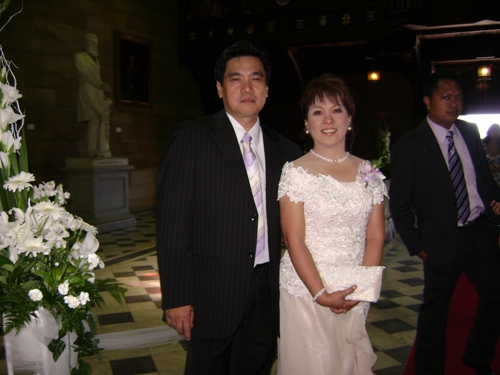
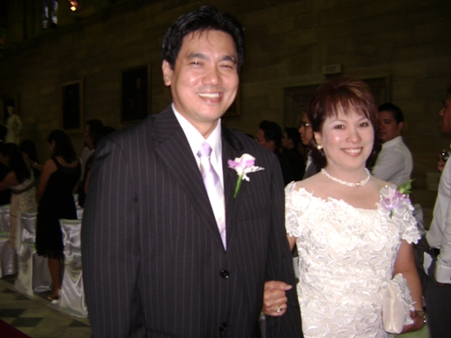
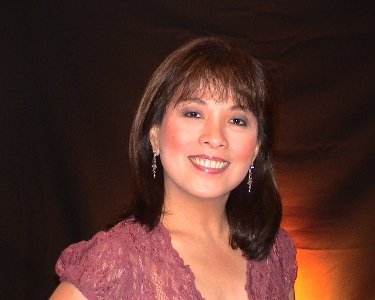
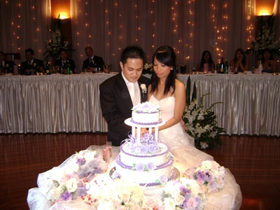

To: qcshs75 batchmates
Subject: Hello from Sydney....
From: Espie
Date: Thu, 10 Apr 2008 17:14:08 +1000
Hi eveyone......
Well.... if you happen to remember your girl classmate/schoolmate who used to play the guitar lalo na kung merong mga gustong kumanta sa school.... well perhaps you will guess...."hey ! that must be Espie dela Torre"! -- C O R R E C T ! REMEMBER ME NOW ?
Before I start introducing myself (do I reallly have to?), my special thanks to Delta and Raquel for introducing me to the group. I have always wondered about my friends in Science High.... and you just don't know how happy I am now for being able to be in touch with you all again.
By the way, Owie, thanks for your call last night. I know it was early in the morning when you called. But it's nice talking to you... kulang ang oras no....
O sige... eto na ang kwento ko....
After high school, I enrolled in UST to pursue a career in Nursing - Malou Hufano was even my classmate then, but Nursing wasn't really for me. So I shifted to Commerce and they said PCC is the school to go. So I went to PCC and took up Secretarial Course, then later earned a degree in Marketing (B.S.C.). Whilst finishing college, I worked at National Computer Centre in Camp Aguinaldo. After a year at NCC, I was offered a job with San Miguel Corp to work as an Executive Secretary to one of the Senior Executives of San Miguel in Ayala, Makati. Also during this time, I got married to Willy Montano and we had a son, Anthony. Anthony, by the way had just got married almost a month ago and he's currently in the US honeymooning with his wife Myrah (now my daughter in law). Had I known Delta and Raquel were in Sydney before then, I could have invited them to the wedding.
O.... continue ulit ha.....
Then in 1984, my sister asked me to visit Australia - and my, my.... I've found Australia so beautiful! So I set my mind to bring my family over. So then in June 1986, I migrated to Australia with my family (thanks to my sister's sponsorship). I first worked with Australia & NewZealand Bank (ANZ), then with AMP Insurance, and now for QBE Insurance Limited as Personal Assistant to a Management Team running QBE and have been with this Company for 11 years now.
Aside from working in an office, I also have another part-time career. You won't believe it, but it's "singing". I have a business and it's called "RE-GROOVE". Long-story..... next time na lang ulit ang kwento....masyadong mahaba na.....
My marriage to Willy unfortunately didn't work after 20 long years. He had re-married, but everything is just pleasant. We're all good friends, that's why Anthony is not really affected by it all. And my life is just great. I am happy and content with how my life is going at the moment. So no fuss really....
----------------------
To Annie and Ruben: Thanks for your e-mail yesterday. Did you get my response? It's also nice to hear from you both.
Also, I had another lunch with Raquel Irinco today (2nd time). It's just great chatting with her. She informed me Amy Cruz will be arriving on 23rd here in Sydney, so I'll be looking forward to meeting you too Amy.....
And to you Delta, thanks again ha... still have to catch up with you for lunch - my shout!
By the way, here are some of my recent photos:
Taken at Anthony's wedding this year, with Rene - March 16, 2008 (just 3 weeks ago)
Taken early last year 2007
O sige.... hanggang dito na lang muna..... hope to hear from you soon.
Cheers everybody ! !
Espie




how Espie came to join our email group
From: delta
To: qcshs75 batchmates
Sent: Friday, April 4, 2008 6:16:17 AM
Subject: [qcshs-75] ESPIE DELA TORRE
Hello ...
Could you please include ESPIE DELA TORRE (now Montano) in our e-group.
Her email address is: ....
I met Espie in a friend's birthday party 2 weeks ago. It was funny because when we were being introduced I did not recognize her at all. She was actually the one who remembered me when our common friend mentioned my name. Then when she said she is Espie, my HS memories of her rushed in. She is even prettier now than when she was in HS. It is amazing that she has been here is Sydney for more than 20 years without anybody in our batch knowing. Anyway, she & Raquel have already met this week & we all (hopefully including Lem) plan to meet up for lunch sometime soon.
Owie, Espie was ecstatic when I told her that you are active in the group. To the rest of our batchmates, please welcome Espie.
Cheers!
Delta